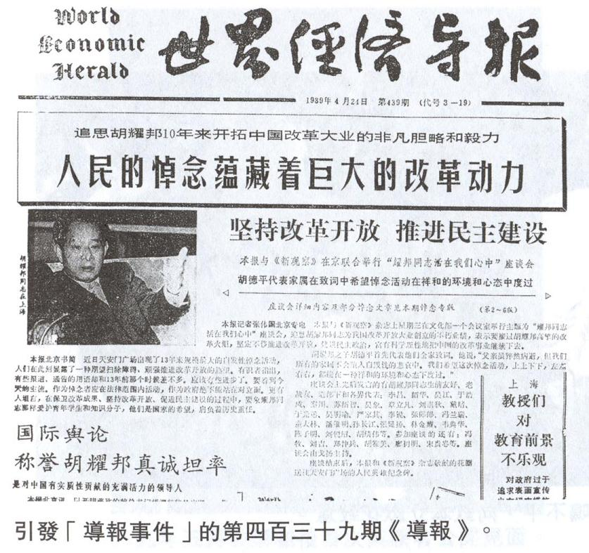
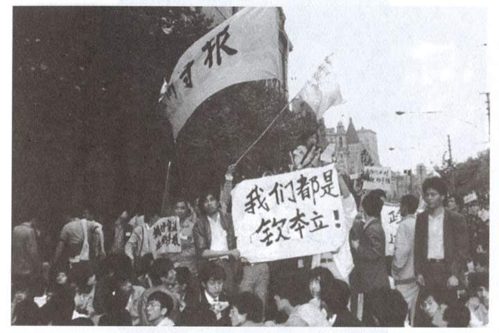
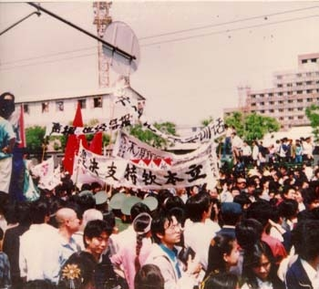
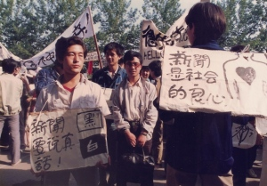
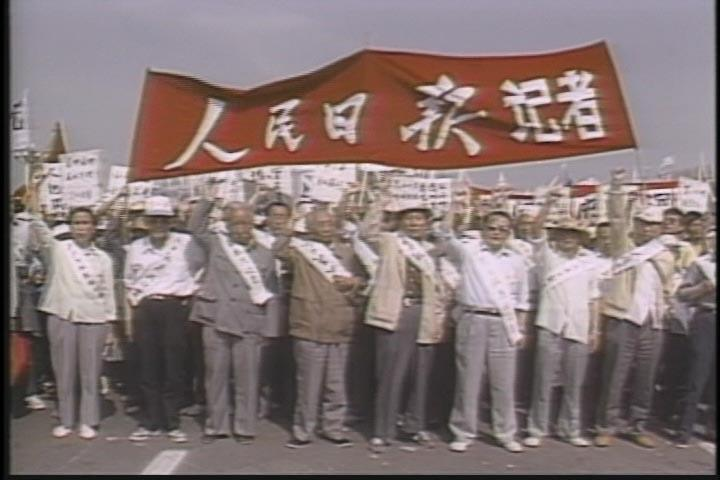
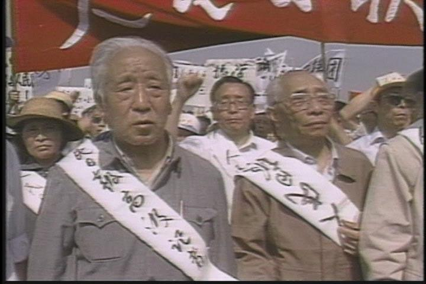

说完4月22日的胡耀邦追悼会，再来聊一聊发生在上海的“《世界经济导报》事件”。此事虽然发生在上海，但对“六四运动”的短期影响以及对天朝历史的长期影响，都远远大于之前的“新华门事件”，值得专门介绍一下。
要聊《世界经济导报》，必先介绍一下创办人钦本立。
（钦本立）
钦本立，蒙古族，笔名“林沧白、里甫”，早在在民国时代就是活跃的新闻记者，40年代就入党的老党员。伟光正掌权之后，钦本立以党员身份，派驻《文汇报》当总编兼党组书记。
1957年那会儿，老毛玩“引蛇出洞”的阴招，忽悠知识分子给党提意见。当时的钦本立也中计，不亦热乎地提意见。等到老毛突然翻脸，发起“反右运动”之后，他自然也跟着倒霉。当时的《文汇报》是反右运动的重灾区，毛太祖还亲自操刀，写了篇《文汇报的资产阶级方向应当批判》。好在钦本立是党员身份，没被划成“右派”（当时的右派，主要针对党外人士），但也受到降职处分并调离《文汇报》。
到了文革，像钦本立这种历史上有污点的人，免不了被关被整。有段时间，他还被红卫兵关到上海郊区的劳改农场，吃尽苦头。
文革结束后，钦本立因为资格老，被调到上海社会科学院担任世界经济研究所，担任党委书记兼副所长。70年代末，朝廷开始搞“改革开放”，他觉得国内需要有一份报纸，专门为“开放”服务，作为老百姓了解外界的窗口，所以就办了《世界经济导报》这份报纸（为了打字省力，以下简称《导报》）。60后70后的网友应该还记得80年代的一句知名口号：“让世界了解中国，让中国了解世界”。这个口号就是《导报》最先提出来的。
如果光从名称上看，很多同学会以为，这个报纸是侧重于经济方面。其实不然——《导报》的政治口味远远重于经济口味。为啥捏？因为钦本立经历过民国时期的新闻检查，又遭受过天朝的多次政治运动，他自然很反感一党专政和新闻审查。
在创办之初，钦本立就确立了一个办报思路：
80年代初期，文革刚结束不久，很多国内报刊都很小心谨慎，不敢乱说话。相形之下，《导报》敢说话的风格，很快就吸引了大量读者，报纸也从双周刊变为周刊，版面扩大到16版。到了80年代后期，《世界经济导报》和《经济学周报》成为天朝最有政治影响力的两份民间刊物。
老胡逝世之后不久，《导报》跟《新观察》联手，于4月19日在北京举办了悼念胡耀邦的座谈会。参加座谈会的，除了《新观察》的主编戈扬女士（俺在前一帖提到过她，列位看官应该有印象）和《导报》北京办事处主任张伟国，还邀请了不少知名人士（胡绩伟、李锐、于光远、苏绍智、严家其、戴晴、陈子明等）。
在座谈会上，严家其（中国社科院政治学研究所所长）和戴晴（光明日报记者，叶剑英养女）的发言比较尖锐。
严家其谈到说，党的最高领导人的权力更替没有实现程序化，完全取决于少数高层人士的个人意志。胡耀邦就是这种体制的牺牲品。
戴晴谈到说，党的历任总书记大都没有好下场，从陈独秀开始，一直到胡耀邦，都是如此。
钦本立当时在上海，没有参加座谈会，座谈会的内容是通过张伟国汇报给他的。钦本立对此次座谈会很重视，要求把所有的发言都刊登出来，总共用掉5个版面（这在《导报》历史上前所未有）。
当时的上海市委书记是江泽民，听说《导报》要开辟专栏，大幅报道“胡耀邦座谈会”，非常紧张（当时北京/上海的学生都开始闹起来，老江怕出啥乱子，会丢官）。于是老江就派他的亲信曾庆红（市委副书记）和陈至立（市宣传部长）去审查。4月21日下午，这两个亲信找到钦本立，要求看即将出版的439期《导报》的清样。看完之后，曾/陈二人认为：严家其和戴晴的言论太敏感，需要删掉。但是钦本立坚决不同意，说：出了事情他个人承担全部责任。双方相持不下（顺便插一句，如今哪个报纸的总编敢这么牛B？）。
既然手下的马仔搞不定，老江只好亲自出马。为了给钦本立施加压力，还叫上了汪道涵。汪道涵是何许人捏？此人曾担任上海市长，是江泽民的老上级，跟江的关系密切（老江就是靠他提拔，才升官的）；另一方面，汪道涵跟钦本立也有十多年的交情，汪还是《导报》的名誉理事长。
到了报社，江汪二人，一个唱白脸一个唱红脸。三人争执了很久，一直到了晚上，钦本立让步，同意删掉500字的敏感言论。
谁曾想，4月23日早上，江汪二人拿到的第439期《导报》，依然是未删节版本。据说汪道涵气得破口大骂，宣布跟钦本立绝交。江泽民当然也很恼火，责令有关部门把已经分发出去的那期报纸强行收回。但是已经来不及了——有相当数量的报纸流传到民间（下图是那期报纸的照片）。

（第439期《世界经济导报》，在头版高调评价胡耀邦 ）
可能有些同学比较好奇，想知道：钦本立既然已经答应要删节，为啥最后出版的依然是完整版本？据俺看到的资料，有如下几种说法：
说法1：因为22日谈完的时候，已经是晚上。等到钦本立回到报社，通知印刷厂的时候，已经有部分报纸分发出去了。
说法2：钦本立故意用缓兵计拖延时间。
那段时间，外国记者的嗅觉都很灵敏。第439期《导报》没有正常发行，立即引起外国记者的注意。到4月24日，多家外国媒体（美国之音、纽约时报 等）都纷纷发布了《导报》脱期的新闻。外媒还猜测，《导报》报社已经被上海市政府整肃。
其实捏，当时的老江仅仅是要求追回那期报纸，尚未出重手整肃《导报》。因为《导报》一直被认为是朝廷改革派在民间的喉舌。而当时朝廷高层的改革派和保守派势均力敌，总书记老赵也是改革派。在这种情况下，老江还不敢对《导报》轻举妄动。
这天，朝廷高层传达了邓小平的讲话（本系列后续博文会具体聊老邓的讲话）。老江是个见风使舵的官场老手，他一看老邓的讲话，就明白政治风向标要转向了。于是，他也跟着强硬起来，准备对《导报》下手。
老江召开党员干部大会（有一万四千人参加），通报朝廷的《4·26社论》。就在这个会上，老江以违反党纪的理由，撤掉钦本立的职务，并宣布接管《导报》编辑部。以下是当时上海市委的通告：（摘自《八九民运史》）
以上就是震动全国的“《世界经济导报》事件”的简要经过。
《导报》被上海市委整肃的消息，迅速传遍全国。当时的北京和上海，学潮正在升温。所以这个消息犹如火上浇油，激起更大的抗议浪潮。不光是学生抗议此事，连很多官方传媒（包括：人民日报、光明日报、文汇报）的记者编辑都上街游行，声援钦本立和《导报》报社（照片如下）。

（游行标语：

（游行标语：
（游行标语：

（游行标语：

（《人民日报》记者声援《导报》）

（身上的白布条写着：
除了上街游行，新闻界的同仁还以其它方式对《导报》表示声援。《中国青年报》的88名编辑和记者给《导报》报社发了慰问电，电文称：
俺个人觉得：《导报》事件可算是六四运动的转折点之一。查封《导报》之前，抗议浪潮仅仅局限在高校；查封《导报》之后，把新闻界的知识分子激怒了。由于新闻界的影响力，又带动其它行业的知识分子加入抗议队伍。所以一天之后的四·二七大游行，才能得到了社会各界（尤其是知识分子）的广泛参与。
成为六四运动的转折点之一，只是《导报》事件的短期影响。
更长期的影响是：江泽民因为此事而出名，并在一个多月之后，被8元老相中，成为下一任总书记。如果没有《导报》事件，天朝的总书记将会是另一个人。（关于八元老是如何挑选总书记的，俺会在本系列的后续博文中介绍）
顺便再交代一下后话。
到了5月下旬，北京实施戒严，局势已经很严峻。而《导报》编辑部被接管，无法再正常运作。钦本立召集报社骨干开会，大家觉得：与其将来被官方撤换主要人员，盗用《导报》的名义欺骗舆论，还不如在自己尚有控制能力的时候，给它划上句号，以保名节。
于是报社发布了一个公开声明，宣布《导报》停刊。至此，《导报》成为永远的回忆。
六四运动被血腥镇压后，朝廷开始秋后算账——《导报》的四个记者（张伟国、阮江宁、陈乐波、许小微）被捕。
上海宣传部长陈至立对导报的其他人也不放过，下了个命令，要求所有参与《导报》的人员，今后不得从事新闻出版行业的工作。
钦本立被软禁（隔离审查），1991年4月15日因癌症去世（那天正好是老胡逝世2周年）。临死前写下“导报精神不死”的题字。
本系列的下一个帖子，俺介绍一下“4·26社论”出笼的前因后果。
（本文内容参考了沈尧写的《钦本立和＜世界经济导报＞》、张伟国的访谈、部分维基百科词条）
回到本系列的目录
★钦本立其人
要聊《世界经济导报》，必先介绍一下创办人钦本立。
（钦本立）
钦本立，蒙古族，笔名“林沧白、里甫”，早在在民国时代就是活跃的新闻记者，40年代就入党的老党员。伟光正掌权之后，钦本立以党员身份，派驻《文汇报》当总编兼党组书记。
1957年那会儿，老毛玩“引蛇出洞”的阴招，忽悠知识分子给党提意见。当时的钦本立也中计，不亦热乎地提意见。等到老毛突然翻脸，发起“反右运动”之后，他自然也跟着倒霉。当时的《文汇报》是反右运动的重灾区，毛太祖还亲自操刀，写了篇《文汇报的资产阶级方向应当批判》。好在钦本立是党员身份，没被划成“右派”（当时的右派，主要针对党外人士），但也受到降职处分并调离《文汇报》。
到了文革，像钦本立这种历史上有污点的人，免不了被关被整。有段时间，他还被红卫兵关到上海郊区的劳改农场，吃尽苦头。
文革结束后，钦本立因为资格老，被调到上海社会科学院担任世界经济研究所，担任党委书记兼副所长。70年代末，朝廷开始搞“改革开放”，他觉得国内需要有一份报纸，专门为“开放”服务，作为老百姓了解外界的窗口，所以就办了《世界经济导报》这份报纸（为了打字省力，以下简称《导报》）。60后70后的网友应该还记得80年代的一句知名口号：“让世界了解中国，让中国了解世界”。这个口号就是《导报》最先提出来的。
★《导报》的特色
如果光从名称上看，很多同学会以为，这个报纸是侧重于经济方面。其实不然——《导报》的政治口味远远重于经济口味。为啥捏？因为钦本立经历过民国时期的新闻检查，又遭受过天朝的多次政治运动，他自然很反感一党专政和新闻审查。
在创办之初，钦本立就确立了一个办报思路：
我们办这张报纸，主要是为了探索在中国进行新闻改革。我们绝不办一般性质的报纸，而必须与其它的报纸不一样，一定要突破千人一面的现实环境。另外，他还跟报社的同僚强调：
创造新的风格，即使不能惊心动魄，也要让人眼睛一亮。
80年代初期，文革刚结束不久，很多国内报刊都很小心谨慎，不敢乱说话。相形之下，《导报》敢说话的风格，很快就吸引了大量读者，报纸也从双周刊变为周刊，版面扩大到16版。到了80年代后期，《世界经济导报》和《经济学周报》成为天朝最有政治影响力的两份民间刊物。
★悼念胡耀邦的座谈会
老胡逝世之后不久，《导报》跟《新观察》联手，于4月19日在北京举办了悼念胡耀邦的座谈会。参加座谈会的，除了《新观察》的主编戈扬女士（俺在前一帖提到过她，列位看官应该有印象）和《导报》北京办事处主任张伟国，还邀请了不少知名人士（胡绩伟、李锐、于光远、苏绍智、严家其、戴晴、陈子明等）。
在座谈会上，严家其（中国社科院政治学研究所所长）和戴晴（光明日报记者，叶剑英养女）的发言比较尖锐。
严家其谈到说，党的最高领导人的权力更替没有实现程序化，完全取决于少数高层人士的个人意志。胡耀邦就是这种体制的牺牲品。
戴晴谈到说，党的历任总书记大都没有好下场，从陈独秀开始，一直到胡耀邦，都是如此。
钦本立当时在上海，没有参加座谈会，座谈会的内容是通过张伟国汇报给他的。钦本立对此次座谈会很重视，要求把所有的发言都刊登出来，总共用掉5个版面（这在《导报》历史上前所未有）。
★钦本立与江泽民闹翻，《导报》被接管
◇4月21日
当时的上海市委书记是江泽民，听说《导报》要开辟专栏，大幅报道“胡耀邦座谈会”，非常紧张（当时北京/上海的学生都开始闹起来，老江怕出啥乱子，会丢官）。于是老江就派他的亲信曾庆红（市委副书记）和陈至立（市宣传部长）去审查。4月21日下午，这两个亲信找到钦本立，要求看即将出版的439期《导报》的清样。看完之后，曾/陈二人认为：严家其和戴晴的言论太敏感，需要删掉。但是钦本立坚决不同意，说：出了事情他个人承担全部责任。双方相持不下（顺便插一句，如今哪个报纸的总编敢这么牛B？）。
◇4月22日
既然手下的马仔搞不定，老江只好亲自出马。为了给钦本立施加压力，还叫上了汪道涵。汪道涵是何许人捏？此人曾担任上海市长，是江泽民的老上级，跟江的关系密切（老江就是靠他提拔，才升官的）；另一方面，汪道涵跟钦本立也有十多年的交情，汪还是《导报》的名誉理事长。
到了报社，江汪二人，一个唱白脸一个唱红脸。三人争执了很久，一直到了晚上，钦本立让步，同意删掉500字的敏感言论。
◇4月23日
谁曾想，4月23日早上，江汪二人拿到的第439期《导报》，依然是未删节版本。据说汪道涵气得破口大骂，宣布跟钦本立绝交。江泽民当然也很恼火，责令有关部门把已经分发出去的那期报纸强行收回。但是已经来不及了——有相当数量的报纸流传到民间（下图是那期报纸的照片）。
（第439期《世界经济导报》，在头版高调评价胡耀邦 ）
可能有些同学比较好奇，想知道：钦本立既然已经答应要删节，为啥最后出版的依然是完整版本？据俺看到的资料，有如下几种说法：
说法1：因为22日谈完的时候，已经是晚上。等到钦本立回到报社，通知印刷厂的时候，已经有部分报纸分发出去了。
说法2：钦本立故意用缓兵计拖延时间。
◇4月24日
那段时间，外国记者的嗅觉都很灵敏。第439期《导报》没有正常发行，立即引起外国记者的注意。到4月24日，多家外国媒体（美国之音、纽约时报 等）都纷纷发布了《导报》脱期的新闻。外媒还猜测，《导报》报社已经被上海市政府整肃。
其实捏，当时的老江仅仅是要求追回那期报纸，尚未出重手整肃《导报》。因为《导报》一直被认为是朝廷改革派在民间的喉舌。而当时朝廷高层的改革派和保守派势均力敌，总书记老赵也是改革派。在这种情况下，老江还不敢对《导报》轻举妄动。
◇4月25日
这天，朝廷高层传达了邓小平的讲话（本系列后续博文会具体聊老邓的讲话）。老江是个见风使舵的官场老手，他一看老邓的讲话，就明白政治风向标要转向了。于是，他也跟着强硬起来，准备对《导报》下手。
◇4月26日
老江召开党员干部大会（有一万四千人参加），通报朝廷的《4·26社论》。就在这个会上，老江以违反党纪的理由，撤掉钦本立的职务，并宣布接管《导报》编辑部。以下是当时上海市委的通告：（摘自《八九民运史》）
鉴于《世界经济导报》总编辑钦本立同志严重违反纪律，市委决定：停止钦本立同志的《世界经济导报》总编辑、党组成员职务；并向《世界经济导报》派驻整顿领导小组，由刘吉同志任组长，孙恒志、张家俊同志为成员，马达同志任顾问。《导报》整顿期间，由整顿领导小组主持《导报》工作。
以上就是震动全国的“《世界经济导报》事件”的简要经过。
★《导报》事件的后续影响
◇各地的声援浪潮
《导报》被上海市委整肃的消息，迅速传遍全国。当时的北京和上海，学潮正在升温。所以这个消息犹如火上浇油，激起更大的抗议浪潮。不光是学生抗议此事，连很多官方传媒（包括：人民日报、光明日报、文汇报）的记者编辑都上街游行，声援钦本立和《导报》报社（照片如下）。
（游行标语：
我们都是钦本立）
（游行标语：
坚决支持钦本立）
（游行标语：
声援《世界经济导报》）
（游行标语：
新闻是社会良心、
新闻要说真话）
（《人民日报》记者声援《导报》）
（身上的白布条写着：
人民日报高级记者）
除了上街游行，新闻界的同仁还以其它方式对《导报》表示声援。《中国青年报》的88名编辑和记者给《导报》报社发了慰问电，电文称：
谨向一向为我们所敬重的世界经济导报及钦本立同志致意！真实的新闻永存！《中国日报》有75名编辑和记者发了另一份电报慰问钦本立及其同事，电文称：
威武不屈，钦总树天下报人风范；真理不死，导报是十年改革先锋。
俺个人觉得：《导报》事件可算是六四运动的转折点之一。查封《导报》之前，抗议浪潮仅仅局限在高校；查封《导报》之后，把新闻界的知识分子激怒了。由于新闻界的影响力，又带动其它行业的知识分子加入抗议队伍。所以一天之后的四·二七大游行，才能得到了社会各界（尤其是知识分子）的广泛参与。
◇对天朝的长期影响
成为六四运动的转折点之一，只是《导报》事件的短期影响。
更长期的影响是：江泽民因为此事而出名，并在一个多月之后，被8元老相中，成为下一任总书记。如果没有《导报》事件，天朝的总书记将会是另一个人。（关于八元老是如何挑选总书记的，俺会在本系列的后续博文中介绍）
★“导报事件”的尾声
顺便再交代一下后话。
◇《导报》停刊
到了5月下旬，北京实施戒严，局势已经很严峻。而《导报》编辑部被接管，无法再正常运作。钦本立召集报社骨干开会，大家觉得：与其将来被官方撤换主要人员，盗用《导报》的名义欺骗舆论，还不如在自己尚有控制能力的时候，给它划上句号，以保名节。
于是报社发布了一个公开声明，宣布《导报》停刊。至此，《导报》成为永远的回忆。
◇朝廷秋后算账
六四运动被血腥镇压后，朝廷开始秋后算账——《导报》的四个记者（张伟国、阮江宁、陈乐波、许小微）被捕。
上海宣传部长陈至立对导报的其他人也不放过，下了个命令，要求所有参与《导报》的人员，今后不得从事新闻出版行业的工作。
钦本立被软禁（隔离审查），1991年4月15日因癌症去世（那天正好是老胡逝世2周年）。临死前写下“导报精神不死”的题字。
本系列的下一个帖子，俺介绍一下“4·26社论”出笼的前因后果。
（本文内容参考了沈尧写的《钦本立和＜世界经济导报＞》、张伟国的访谈、部分维基百科词条）
回到本系列的目录
版权声明
本博客所有的原创文章，作者皆保留版权。转载必须包含本声明，保持本文完整，并以超链接形式注明作者编程随想和本文原始地址：
https://program-think.blogspot.com/2012/04/june-fourth-incident-15.html
本博客所有的原创文章，作者皆保留版权。转载必须包含本声明，保持本文完整，并以超链接形式注明作者编程随想和本文原始地址：
https://program-think.blogspot.com/2012/04/june-fourth-incident-15.html